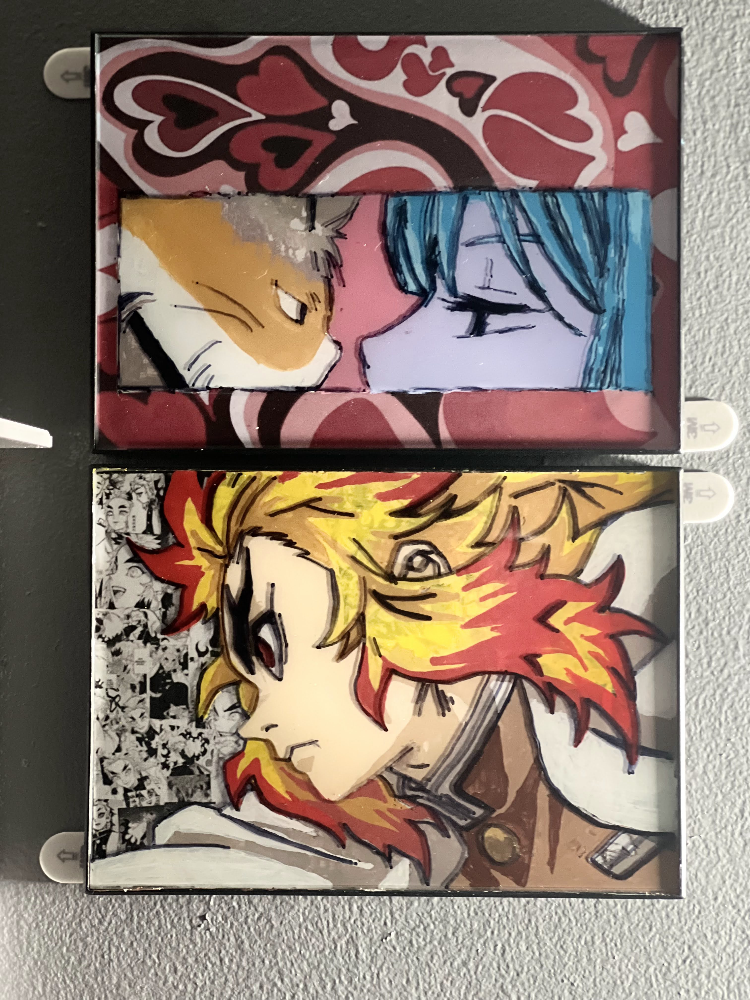

Some of my portfolio work!
I have created many different artworks throughout the years. Here are some of the pieces that I have made, using tons of inspiration from the plethra of interests I have.
Traditional Artworks:
These are all done with the traditional drawing techniques and mediums.

Glass Painting: This is a small project that my girlfriend and I did. This was our first
time doing something like this. She loves cats, so she painted herself with a cat. I like Demon Slayer so I painted Kyojuru Rengoku.
"Death's Hourhglass": A project I made in HS.
Chloe Grace Moretz Portrait: A project I made in HS with the only two requirements being to use a map, and make a portrait.
Digital Artworks:
These are works I have made using illustrator, photoshop, and ProCreate
SENTINELS Player TenZ: A custom made eSports banner that I created for the well known competitve player.
Yoseon 100T Banner: Expirementing with styles of esports this banner was made for the voice of K/DAs Akali
ProCreate Piece:Starting from ProCreate with a doodle, I kept ccoming back to it day by day and got this as a result after using photohop and illustrator.
Tattoos:
During pandemic I was inspired by other tattoo artists and decided to give it a shot with small and simple tattoos.
Semi-Colon Treble Clef: Being heavily inspired by the semi-colon project they wished to display this with their love of music.
Polygon Unicorn:This individual truly loved to be unique and loved reading about unicorns, along with their love of simple shapes.
Ankh Afro: This individual wanted to represent their mixed culture and show the mix they are Egyptian and African American c
Go Back